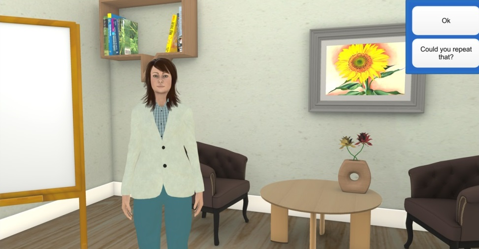
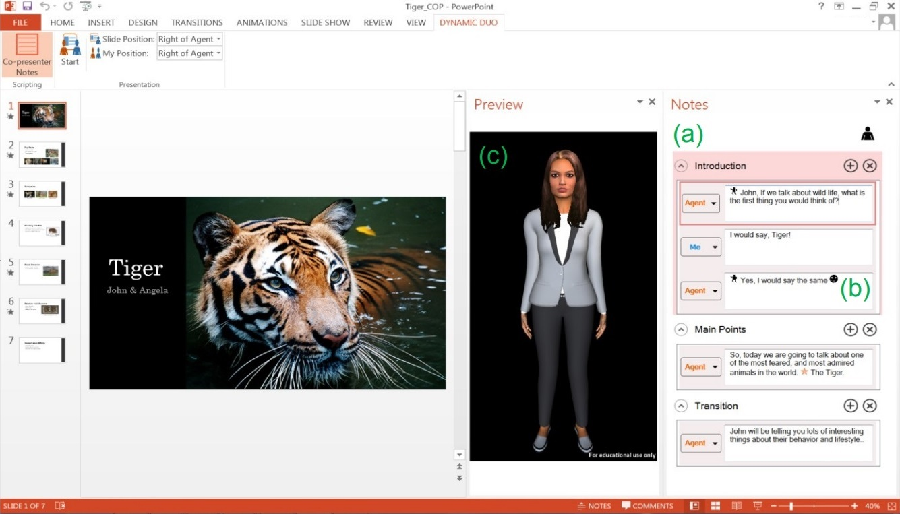

Researcher: Graduate/PostdoctoralNortheastern University
Project: An Affectively-Aware Dialogue System for Conseling (PhD Thesis)
Conceptualized a theoretical framework for using empathic statements to respond to real time changes in a user’s affective state. Implemented as part of a five-week-long intervention that used an embodied conversational agent to deliver automated cognitive behavioral therapy based depression counseling. Evaluated usage data and self report measures in R, and conducted a thematic analysis of debriefing interviews.
Key Accomplishments:- Developed an embodied conversational agent in Unity that allowed for simulated face-to-face conversation.
- Developed a JSON based scripting language to easily create dialogue for conversational agents.
- Conducted a five-week long user study with the target population with the system being remotely deployed on their personal computers.
- Performed both quantitative and qualitative analysis of the user study, highlighting the benefits of affective awareness in conversational agents.
Project: DynamicDuo (Co-Presenter Agent)
Designed a co-presentation system to help inexperienced presenters deliver their presentations in front of an audience. Evaluated system against traditional presentation technology to explore its impact on user’s anxiety and acceptance of the technology by both users and external judges.
Key Accomplishments:- Created and integrated a life size embodied conversational agent into powerpoint.
- Incorporated gestural interfaces (body motions) to allow for more natural interactions with the agent.
- Co-presented the results with the conversational agent live at the CHI 2015 Conference in Korea.
Project: AlwaysOn (PhD Thesis)
Investigated and developed a social support agent for isolated older adults. Conducted multiple studies evaluating user requirements, feature feasibility, and agent acceptance. Led a final month-long evaluation study assessing the impact of embodiment on agent acceptance using virtual and robot based variants of the system.
Key Accomplishments:- Created an architecture that works with both embodied conversational agents and robots.
- Deployed and maintained the system remotely across month long installations into older adults homes.
- Created a wrapper for Google Hangouts to allow older adults to use video conferencing through natural dialogue with the conversational agent/robot.